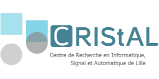
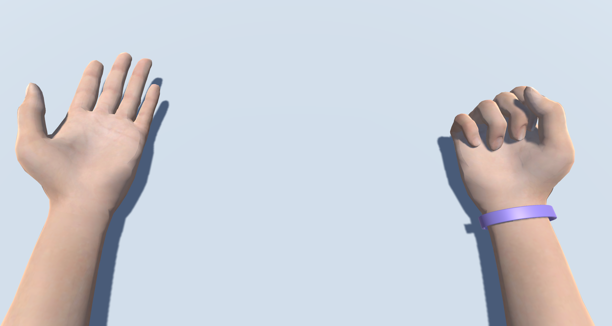
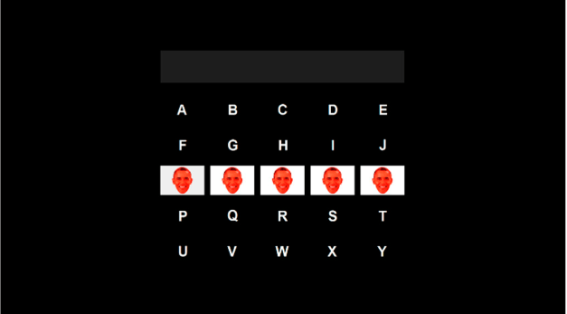
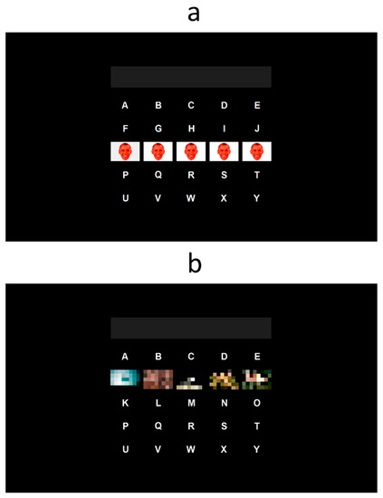
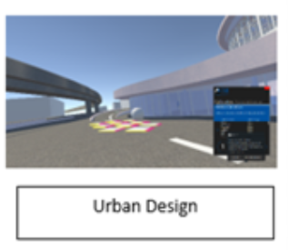
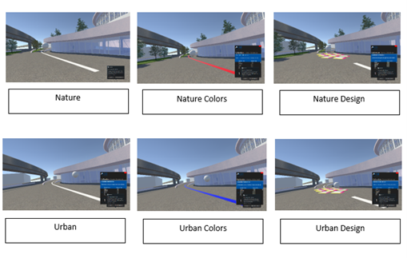

Data fusion of eye-tracking and electroencephalography for gaze-independant brain-compuer interfaces
BCIEye-TrackerEEG More informationsMy final-year internship took place at the CRIStAL Laboratory in Lille under the supervision of François Cabestaing, where I was working on a gaze-independent brain-computer interface. The goal of this internship was to collaborate with Arne Van Den Kerchove, a PhD student, by conducting experiments with patients in a locked-in state, on one hand. On the other hand, I was also working on fusing eye-tracking and electroencephalography (EEG) data to improve performance in selecting a target on a screen. This work on data fusion allowed me to present a poster at the CORTICO conference.

Brain-Computer Interfaces based on motor imagery for post-stroke rehabilitation
BCIMotor imageryPost-stroke rehabilitation More informationsMy second-year internship allows me to learn about BCI based on motor imagery and its direct usages with post-stroke rehabilitation. I was working in the POTIOC team at the Inria center at the University of Bordeaux, more specifically with Fabien Lotte and David Trocellier. I collaborate on an experiment focusing on post-stroke motor recovery using BCI. Here are the various tasks I carried out:


During my first-year of engineering school, I worked on a research project studying BCI which permits to use a keyboard based on the brain activity. The goal was to compare two different types of paradigms already existing. The project was supervised by Ricardo Ron Angevin and ended with a publication. I worked all along the year on the project whch ended with a one-month internship. Here are the various tasks I carried out:

Study on the influence of color and design on city dwellers
PhysiologyPsychologyStress More informations
During my last year of bachelor degree, I assisted the researcher Yvonne Delevoye on a study project on the influence of color and design on urban dwellers stress levels. I was able to conduct the experiments in virtual reality and analyze the data collected. Finally, I wrote my bachelor's thesis on this topic.